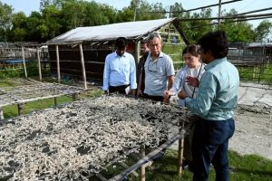
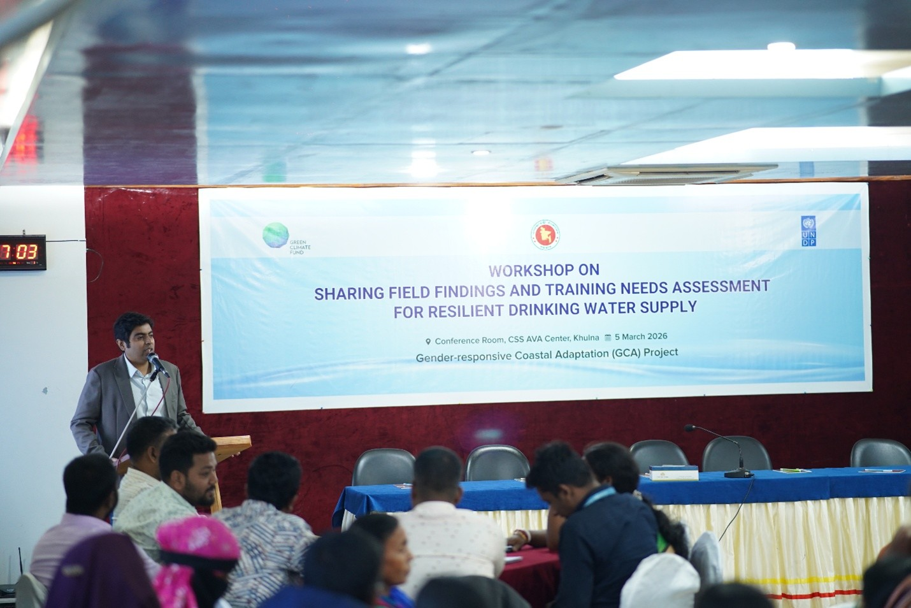
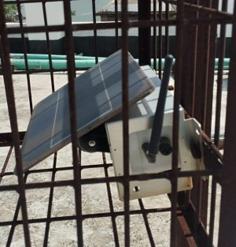

Nature Conservation Management (NACOM) has extensive experience in pollution control, focusing on indoor and outdoor air pollution including water and soil pollution in Bangladesh. NACOM works with diverse stakeholders, including national and international experts, to develop effective air pollution control solutions. Projects like “Cleaner Air, Healthier Dhaka” involve continuous monitoring of key pollutants like PM2.5 and NO2. This data is then used to analyze trends, identify Clean Air Zones (CAZs), conduct policy assessments to inform better regulations, foster integrated air quality actions and actively raise public awareness about air quality risks. The Strengthening Knowledge and Actions for Air Quality Improvement project, funded by ADB, covering multiple cities with activities like air quality monitoring (using AQMesh Pods), emission inventories, source apportionment, policy evaluation, capacity building for officials and brick kiln manufacturers, public awareness, and drafting a Clean Air Action Plan. Indoor air pollution mitigation through promotion of improved cook stoves, retained heat cookers, and biomass briquettes, reducing health impacts on women and children. NACOM has directly mitigated pollution by installing Clean Cook Stoves through 5 projects in the coastal region and various other technical studies, stakeholder consultations, and community mobilization efforts to address air pollution comprehensively. To protect the environment and enhance coastal resilience, NACOM has addressed water and soil pollution by conducting beach cleanup activities in coastal areas.


